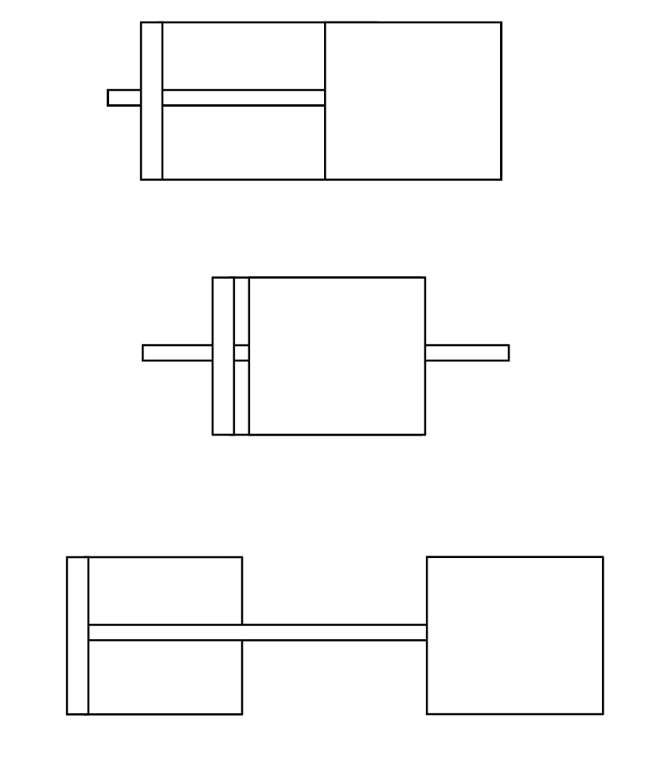
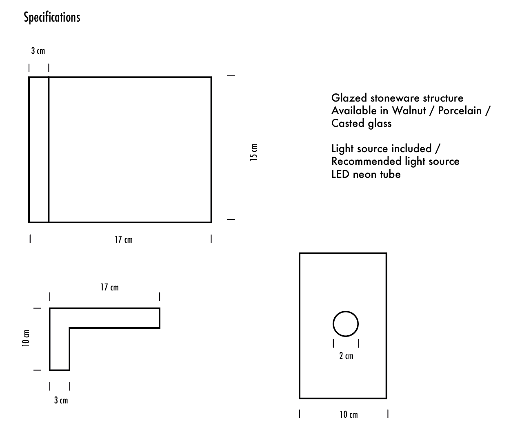

ESTEL
ESTEL (star/ trace of light in Catalan), brings together ceramics and wood in a calm, modular structure that celebrates flexibility and freedom of choice. The ceramic surfaces feature carved illustrations that interact with the light, allowing it to pass through the different openings and etched lines, creating gentle variations of glow and shadow. Designed as a repeatable unit, ESTEL can stand alone or be combined into larger constellations, adapting to different spaces and always finished according to the wishes of the owner.

CHOOSE YOUR OWN CONSTELLATION
Each block is free to move. It is easy to add new modules of the same type, or play with other materials and patterns. Everything depends on your window and your imagination.

